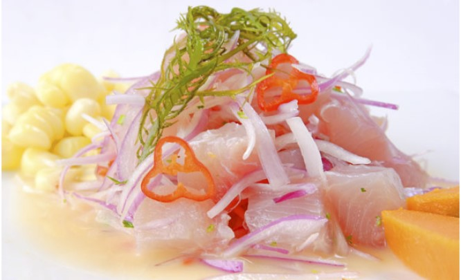
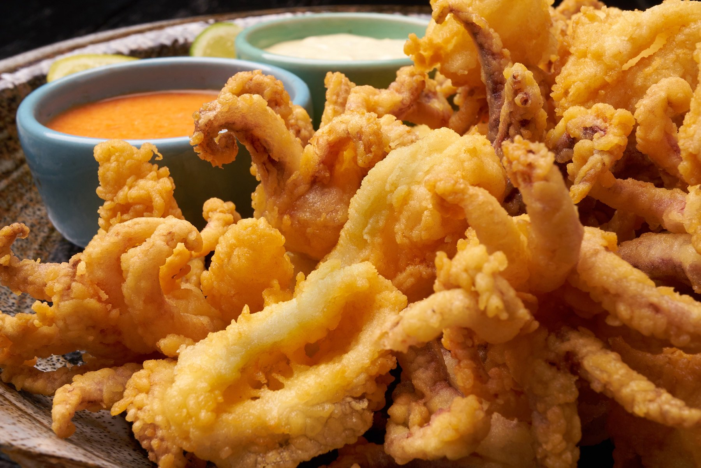
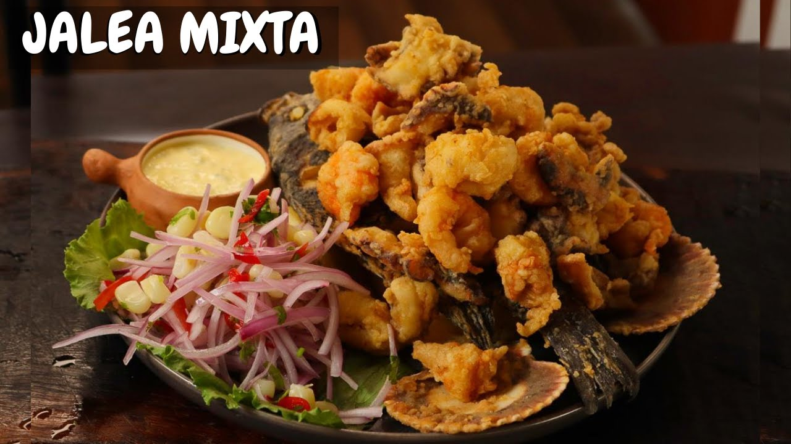
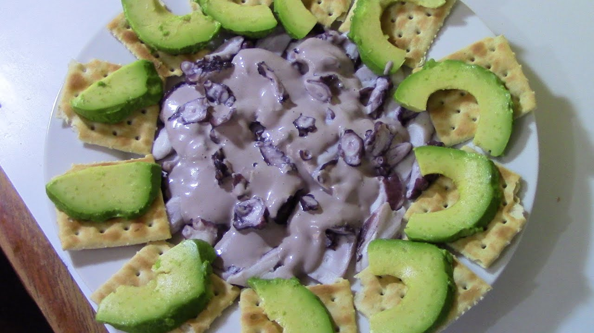

Nuestra Historia En Cevicheria Tu Casero, cada plato cuenta una historia. Desde las costas del Pacífico hasta tu mesa, nuestros chefs expertos seleccionan los ingredientes más frescos para crear ceviches y mariscos que te transportarán a las playas soleadas y las brisas saladas.
Nuestro Menú
- Ceviche Clásico: El equilibrio perfecto entre el jugo de limón, el ají y los mariscos frescos. ¡Una explosión de sabor en cada bocado!

- Tiradito de Pescado: Finas láminas de pescado bañadas en una salsa de rocoto y cilantro. ¡Una delicia para los amantes del picante!

- Chicharrón de Calamar: Crujientes anillos de calamar fritos, acompañados de salsa criolla y yucas doradas.

- Jalea Mixta: Mariscos y pescados fritos en una masa ligera y crujiente. ¡Irresistible!

- Pulpo al Olivo: Tierno pulpo cocido al punto perfecto, servido con aceitunas y una salsa de ají amarillo.

Ven y Disfruta Te invitamos a visitarnos en nuestro acogedor local. Ya sea que estés celebrando una ocasión especial o simplemente quieras disfrutar de un buen ceviche, Cevicheria Tu Casero te espera con los brazos abiertos. ¡Buen provecho!